Mauna Kea Magic
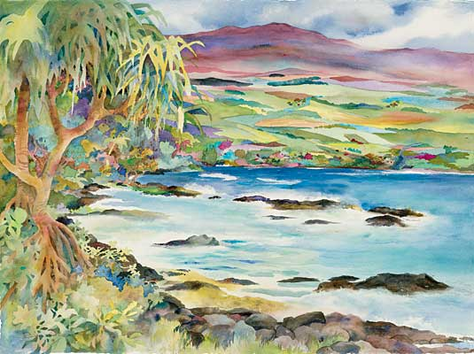Volcano Rain Forest
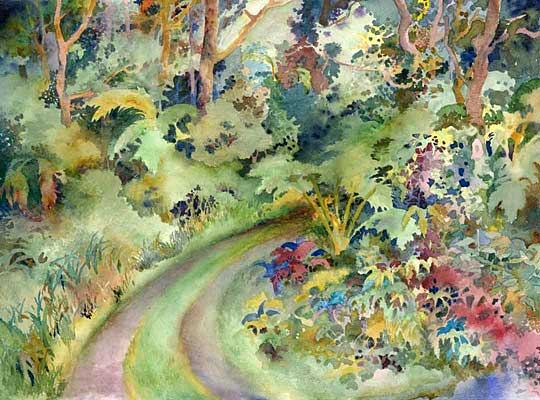Na Pua Lani
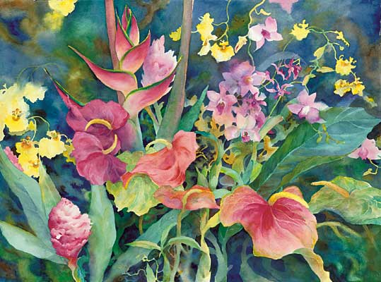New Zealand Landscape
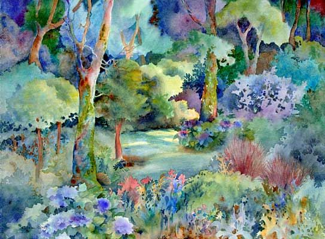Becky's Farm
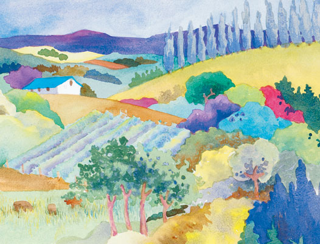Calla Lilly
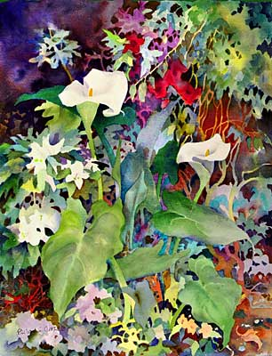Cottage at Mauna Lani
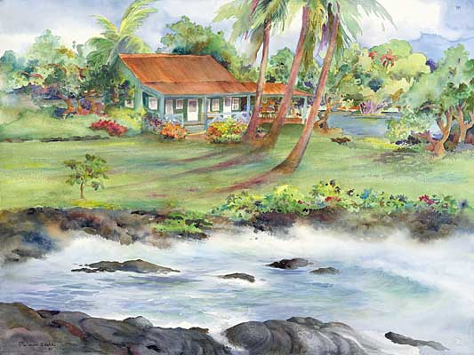Country Palette
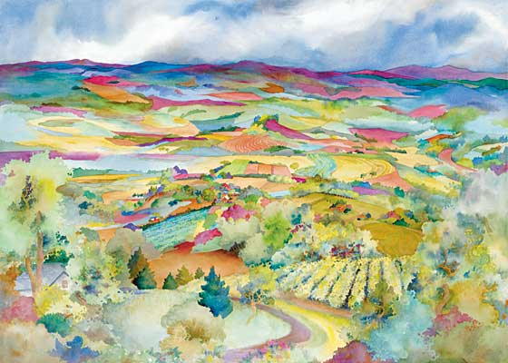Essence of Hawaii
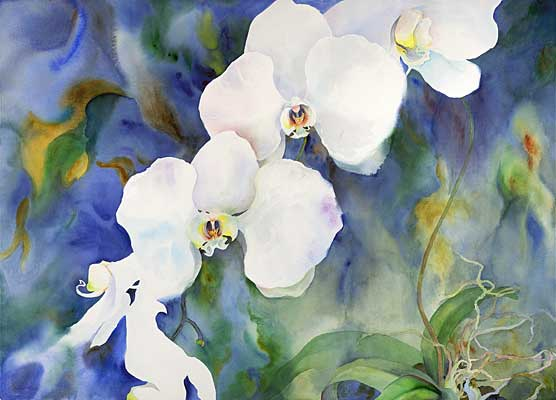Haleconias
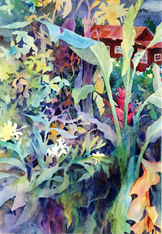Home Sweet Home
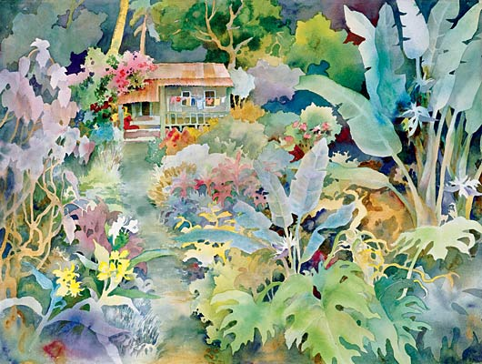Pua Aloha
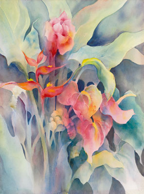Hono Hono in the Wild
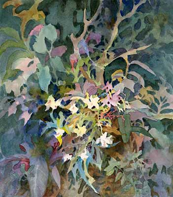Jungle
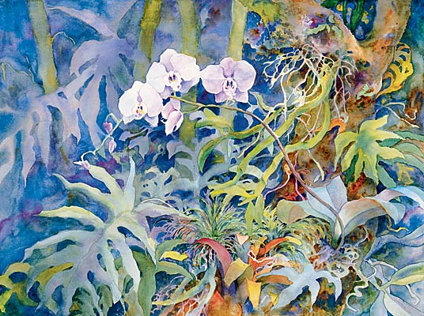Flora Aquarious
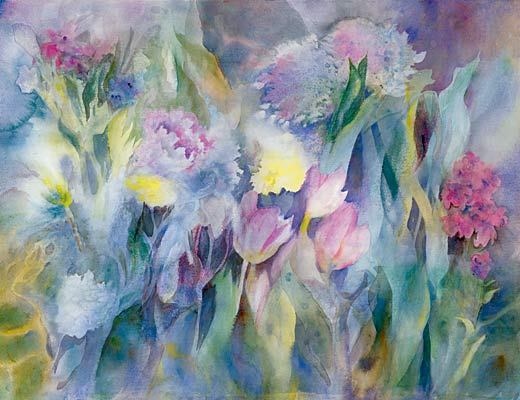Kalakuaus Kahaluu Retreat
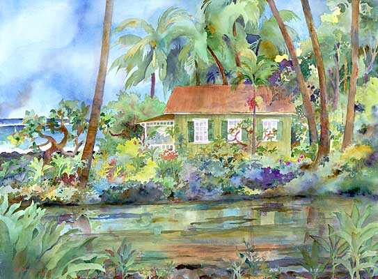Mahi's Roosters
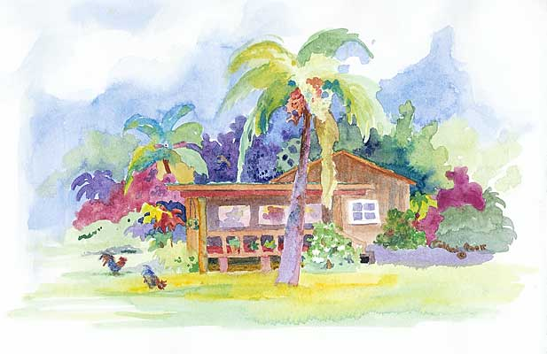Vermont Landscape
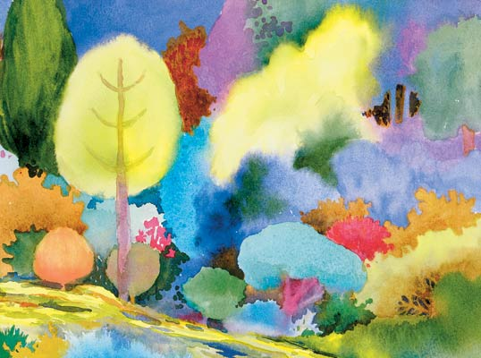Waikiki PM
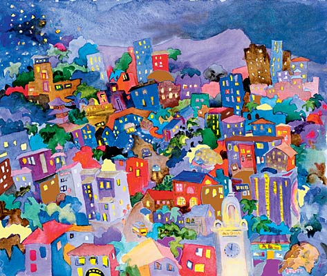Obakes
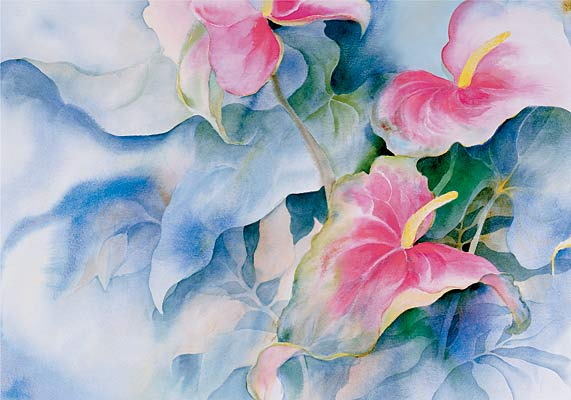Waimea Truck Garden
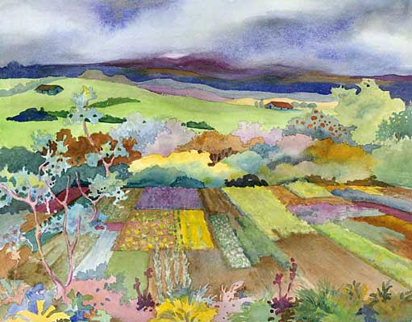Yamhill Landscape
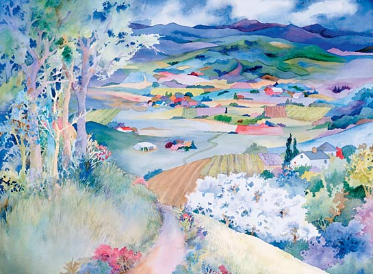Piilani Cook is an accomplished painter, best known for her magnificent florals and landscapes, alive with color and movement. Piilani's work has been influenced and inspired by the many different places, people and cultures through out the world which she has experienced. Piilani, was born and raised on the island of Hawaii and her rich Hawaiian heritage was and continues to be the primary basis that has influenced her distinctive work. Piilani's exquisite watercolors are created through an intricate multi-layered process taking patience and skill. Her paintings reflect the softness of the island air as well as the the vibrant life force that draws people to the islands. They are sensuous, warm, exciting and passionate. Each painting is a part of Piiiani created for a reason only known to the artist.
After graduating from high school in Hilo, Piilani studied Art at Boston University. She lived in Southern California for many years where she furthered her interest in watercolor with Millard Sheets, Milford Zorne and Robert Wood. She now spends time between Hawaii and Oregon where she is well known for her beautiful vineyard landscapes.
Piilani has a zest for life with a touch of whimsy that at times you will see in her paintings She paints as she lives, with a strong appreciation for enjoying life to its fullest and always looking ahead toward a new adventure. You can find Piilani and her husband Bob, walking the ruins of Turkey, exploring the Amazon, trekking through the Andes, painting in the South of France, visiting her Grandchildren or in Hawaii with her family and many friends always with her sketch book at hand. Piilani enjoys the process involved in commissioned paintings. With just a short consultation with a client, Piiiani has the unique ability to create that special piece that can't be found. "Each painting has its own fundamental nature. By communicating with clients, I try to understand what it is that they are looking for and to capture that in a painting created just for themselves."
Piilani's originals are magnificent but because of the time involved in creating a painting, Piilani now also offers numbered and signed limited edition "enhanced" Giclee reproductions making her work more available. All "enhanced" Giclee's are unique making each piece an original in itself but at a reduced cost. Piilani is a past member of the Canadian Water Colour Society, the Honolulu Watercolor Society and is presently a member of the Oregon Watercolor Society of which she is an award winner. Her paintings are represented in collections in Canada, Europe and the U.S.